- 微积分总览
- 导数总览
- 极值和二阶导数
- 指数函数 y=eˣ
- 积分总览
- sin / cos 的导数
- 乘法法则 Product Rule
- 除法法则 Quotient Rule
- the Chain Rule for f(g(x))
- Limits
- Continuous Function
- Inverse function 逆函数
- derivatives of lny and sin⁻¹(y) (f⁻¹型导数)
- Growth Rate and Log Graphs
- 线性近似 Linear Approximation
- Newton's Method 牛顿法
- 泰勒级数 Taylor series
- 幂级数 Power Series
微积分总览
differential calculus 微分学
从距离函数 f->速度函数s
integral calculus 积分学 integral(from whole)
从 速度函数s->距离函数f
函数1 和 函数2 的关系
- 函数f 在某个t的函数值，描述的，是函数s的图像面积
- 函数s 在某个t的函数值， 是 函数f 在t 时刻的斜率
- f= ∫s(t) (f1是f2的积分)
- df/dt = s (f2是f1的导数)
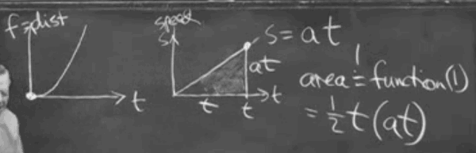
导数总览
几个重要的函数导数
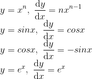
sinx
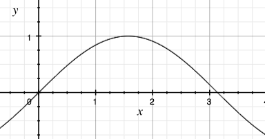
eˣ
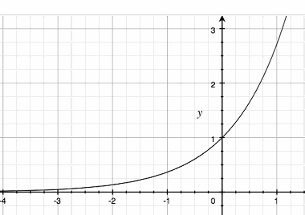
极值和二阶导数
一阶导数 求 极值点 ，导数=0
二阶导数 确定 极值点性质
距离／速度 / 加速度 的例子
距离函数f 的一阶导数 dy/dx 是 速度函数, 是f图像的斜率slope
二阶导数是 d²y/dx² 加速度函数, 是f图像的弯曲度 bending
Convex ,bending up, 凸 , 极小值 , ex: x²
Concave, bending down ,凹, 极大值
二阶导数性质
极值点，二阶导数为负值，局部最大值（极大值）
极值点，二阶导数为正值，局部最小值（极小值）
inflection point 拐点: 二阶导数为0的点，也是二阶导数开始改变符号的地方
导数应用例子
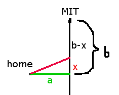
开车到MIT， 从家开车到麻省高速的车速是30,的垂直距离是a, 麻省高速的车速为60， 求最省时间的开车路线（红色)
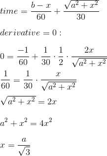
注意点:
- 如果MIT距离不够远，即MIT 位于x段，需要特殊处理一下
- 理论上，需要再求一下2阶导数，来确定是极小值，但是这里f''的符号，可以通过f'的单调性来求出，简单说：x>0时f'(x)>0,斜率变化为正，f''>0 (why?)
指数函数 y=eˣ
重要性质:
- 导数是其自身:
dy/dx = y eˣ·eʸ= eˣ⁺ʸ, 推论: eˣ·e⁻ˣ =1 , e⁻ˣ=1/eˣ, 互为倒数
eˣ 构建:
从x=0, eˣ=1 开始, 根据性质: (eˣ)'=eˣ , 无限展开
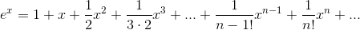
当x=1时，指数级数的值就是e，近似2.7
1+x <= eˣ

银行存款和e的联系
假设年利率是 100%,
按年结算，第2年的总存款变为 (1+1)¹=2
按月结算，第12个月的总存款变为 (1+1/12)¹²= 2.613035290224676
按天结算，第365天的总存款变为 (1+1/365)³⁶⁵ = 2.7145674820219727
按N 结算，(1+1/N)ᴺ -> e
y' = dy/dx = ay 的情况, y = eªˣ
积分总览
- 函数2是函数1的导数
- 函数1是函数2的积分
- 积分=函数1=函数2图像下的面积
sin / cos 的导数
sin/cos 勾股定理
(cosθ)²+(sinθ)²=1
弧度 等于半径为1圆周上对应的弧长 ( 圆周长2π )
弧度θ 对应的扇形面积，等于 θ/2
S = πr²/(2π) * θ = θ/2
sinθ < θ ( θ>0 , 弧度制)
作图证明:
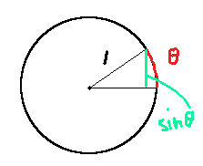
tanθ > θ ( 0< θ <π/2 , 弧度制 )
作图证明:
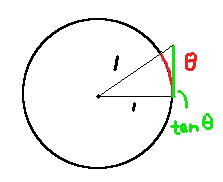
- tanθ = sinθ/cosθ, 如果直角三角形的邻边=1, 则对边就=tanθ
- 三角形面积 tanθ/2 > 扇形面积 θ/2 => tanθ > θ
由此可以推出, sinθ/θ > cosθ ,
所以， 当 θ->0 时，sinθ/θ = 1
dsinx/dx = cosx 的证明
sin(ɑ+β)=sinɑ·cosβ + cosɑ·sinβ
cos(ɑ+β)=cosɑ·cosβ - sinɑ·sinβ
证明:
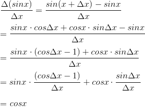
第一项后半部分的比值，其实就是0点处cosx 的斜率=0
乘法法则 Product Rule
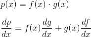
图解:
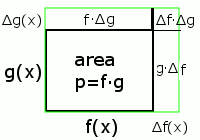
如图所示:
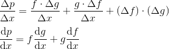
eg:
x³ = x²·x
d/dx(x³) = x²·1 + x·2x = 3x²
d/dx(f(x)³)= 3f(x)²·df/dx
除法法则 Quotient Rule
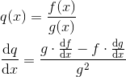
下乘上导，减上乘下导，除以 下下
利用乘法法则推演:
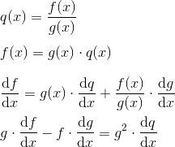
the Chain Rule for f(g(x))
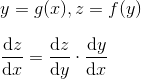
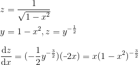
Limits
| 函数运算 | DANGER! |
|---|---|
| an - bn -> A-B | ∞-∞ |
| an・bn -> AB | 0・∞ |
| an / bn | 0/0 or ∞/∞ |
| (an)ᵇⁿ | shows below |
(an)ᵇⁿ dangerous case:
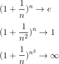
洛必塔法则: 0/0型不定式极限
使用导数求解 0/0 型
1. 当x趋于a时，函数f(x)及g(x)都趋于零
2. 在点a的某去心邻域内，f'(x)及g'(x)都存在且g'(x)不为零
3. 若f'(x)/g'(x)极限存在，则有 f(x)/g(x)的极限 等于 f'(x)/F'(x)的极限 (lim x->a) 。
if f(x)→0, as x→0 ; g(x)→0, as x→0 ;
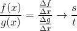
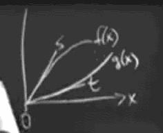
极限不存在的例子:
√x 在 x→0时极限不存在。
函数连续是较弱的性质，较强的性质的可导：可导必然连续，连续不一定可导。
Continuous Function
Continuous f(x) at x→a,
means f(x)→f(a) as x→a.
also means , for any ϵ choosen by Socrates, Plato can find a δ so that:
if |x-a|<δ then |f(x)-f(a)|<ϵ
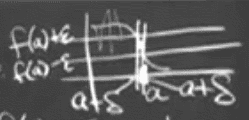
函数不连续的例子:
x→0 时函数不连续:
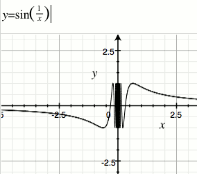
修改一下，使其在 x→0 时连续:
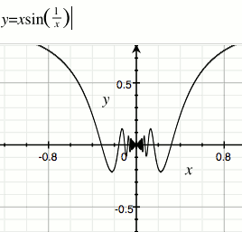
Inverse function 逆函数
y=f(x) , x=f⁻¹(y)
指数函数eˣ的逆函数是 lny
y=eˣ , x= lny
ln(y·Y) = lny + lnY (1)
ln(yⁿ) = n·lny (2)
证明(1):
y=eˣ
Y=e^X
y·Y = eˣ·e^X = e^(x+X)
ln(y·Y) = x+X = lny + lnY
证明(2):
ln(y²)=ln(yy)=lny+lny=x+x =2x = 2lny
可以推出:
ln(yⁿ)=nlny
所有 逆函数图像和原函数图像，沿y=x 的直线对称
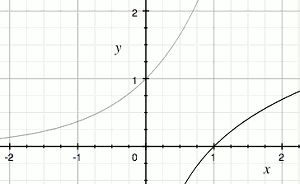
对数函数，即指数函数的逆函数的导数:
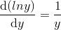
derivatives of lny and sin⁻¹(y) (f⁻¹型导数)
f⁻¹(f(x))=x (1)
f(f⁻¹(y))=y (2)
上面的式子告诉我们，如果知道怎么求 f(x)的倒数，用链式法则就可以求出f⁻¹(y)的倒数。
lny example 1:
ln(eˣ)=x (对数函数的定义)
令y=eˣ , 两边求导:
d(lny)/dy · d(eˣ)/dx = 1
d(lny)/dy · eˣ = 1
d(lny)/dy · y = 1
由此得出:
d(lny)/dy = 1/y
在我们求导 xⁿ的时候，如果n=0 , 则 (xⁿ)'＝0, 我们并不能获得 x的⁻¹次幂，事实上，不存在幂函数的导数能得到⁻¹次幂。
这就像一个遗漏，现在 lny 填补了这个遗漏。
lny example 2:
eˡⁿʸ=y
(eˡⁿʸ) · d(lny)/dy = 1
d(lny)/dy = 1/y
x = sin⁻¹y (arcsin)
y = sin( sin⁻¹y )
两边求导:
1 = cos( sin⁻¹y ) · d(sin⁻¹y)/dy
因为 sin²x + sin²y =1, 得出
1 = √(1-y²)· d(sin⁻¹y)/dy
d(sin⁻¹y)/dy = 1 /( √(1-y²) )
同理可得:
d(cos⁻¹y)/dy = -1 /( √(1-y²) )
我们发现：
d(sin⁻¹y)/dy + d(cos⁻¹y)/dy =0
常数项的导数为0，由此可知, arcsin + arccos 的和是一个常数，事实上，arcsin + arccos = 直角三角形的两个锐角的和 = π/2
Growth Rate and Log Graphs
| 函数 | x=1000时近似结果 |
|---|---|
| cx | 10³ |
| x² | 10⁶ |
| x³ | 10⁹ |
| 2ˣ | 10³⁰⁰ |
| eˣ | 10⁴³⁴ |
| 10ˣ | 10¹⁰⁰⁰ |
| x! | 10²⁵⁶⁶ |
| xˣ | 10³⁰⁰⁰ |
TODO
线性近似 Linear Approximation
x 在 a点的导数，近似等于:
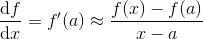
由此得出:
- f(x) ≈ f(a)+(x-a)·f'(a) (1)
- x-a ≈
-F(a)/F'(a) (2，用于解F(x)=0方程)
example 1: 求√9.06
f(x) = √x = x⁰ᐧ⁵
f'(x) = 1/2 · x⁻⁰ᐧ⁵
choose a=9
f(a)=3
f'(a) = 1/6
√9.06 ≈ 3 + (9.06-9)*1/6 = 3.01
example 2: 解方程: F(x) = x²-9.06 =0
choose a=3
F(a)= 9-9.06 = -0.06
F'(a) = 2a = 6
x-3 = -(-0.06/6)
x = 3.01
example 3: 求 e⁰ᐧ⁰¹
f(x) = eˣ
choose a=0
f(0) =1
f'(0) =1
e⁰ᐧ⁰¹≈ f(a)+(0.01-a)f'(a) = 1+0.01
我们可以看到 eˣ = 1+x
1+x 其实就是 eˣ 幂级数 从常数项和线性项之后的拦腰截断。 当 x 很小的时候，x < 0.1 , eˣ 近似等于 1+x>
Newton's Method 牛顿法
使用线性近似求的近似值 x₁后, 利用 x₁和公式2进行下一轮迭代，以获得更小的误差。
解方程: F(x) = x²-9.06 =0
a=3.01
F(a) = 0.0001
F'(a) = 2a = 6.02
x-a ≈ -(F(a)/F'(a))
x ≈ 3.01 - ( 0.0001/6.02 ) // (x*x = 9.0600000002759)
泰勒级数 Taylor series
在数学中，泰勒级数 用无限项连加式级数来表示一个函数，这些相加的项由函数在某一点的导数求得。
定义：如果 在点x=x0具有任意阶导数，则幂级数

称为 在点x0处的泰勒级数
特别的，取x0=0，得到的级数

称为麦克劳林级数。函数 的麦克劳林级数是x的幂级数
幂级数 Power Series
用函数f(x) 在x=0处的各级导数，来描述函数f(x)
f(x) = a + a₁x + a₂x² + a₃x³ + ...
eˣ 的幂级数
因此 e⁰=1, (eˣ)'=eˣ , e^n的阶导数等于1
所以:
sin, cos的级数
sinx 各级导数如下：
| \ | 0 | 1 | 2 | 3 | 4 | 5 | ... |
|---|---|---|---|---|---|---|---|
| 导数 | sinx | cosx | -sinx | -cosx | sinx | cosx | ... |
| x=0取值 | 0 | 1 | 0 | -1 | 0 | 1 | ... |
所以,sinx 的幂级数构建如下:
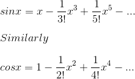
我们看到，cosx的幂级数，都是偶次幂，所以 cos(-x)=cos(x), 这给了我们另一个观察奇/偶函数的视点。
欧拉公式 Euler's Great Formular
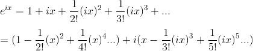
我们看到:
eⁱˣ= cosx + i·sinx
把 x 改成θ , eⁱᶿ= cosθ + i·sinθ
函数图像:
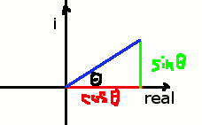
几何级数 geometric series
1 + x + x² + x³ + ...
当 |x| < 1 时,
1/(1-x) = 1 + x + x² + x³ + ...
对等式求积分:
-ln(1-x) = x + x²/2 + x³/3 + ...
for r != 1 :
1 + r + r²+ ... + rᵏ = (rᵏ⁺¹-1)/(r-1) (算法课程中提及)